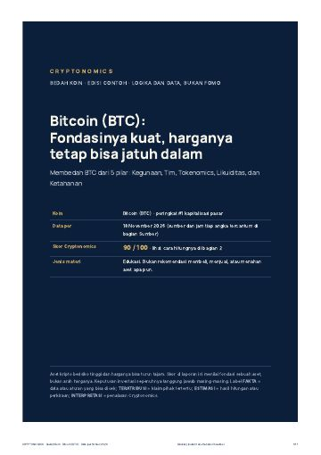

Bitcoin (BTC): Fondasinya kuat, harganya tetap bisa jatuh dalam
Membedah BTC dari lima pilar: Kegunaan, Tim & Tata Kelola, Tokenomics, Likuiditas, dan Ketahanan. Skor menilai fondasi aset, bukan arah harga.
- 11 halaman
- PDF · 355 KB
- Skor Cryptonomics 90/100